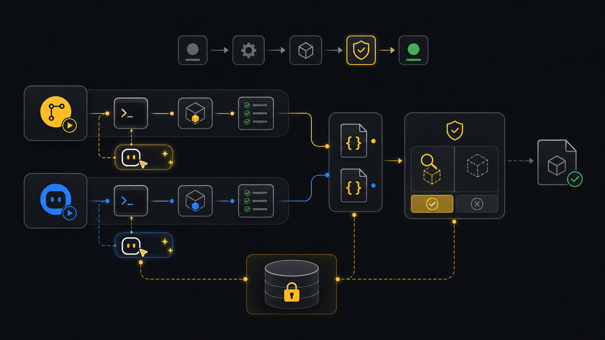

Automation
CI and agents.
Use this when Xyte checks or reports need to run without a person typing every command: scheduled jobs, pipeline checks, or shell-capable agents such as Codex, Claude Code, and Copilot Agent mode.
Ask an agent
Ask for the automation outcome. The workflow keeps environment setup, tenant access, and write gates explicit.
Set up a repeatable xyte-cli job for this workspace.
Ask what the job should produce: readiness, fleet JSON, incident snapshot, daily report, or a plan-only change workflow.
Check the CLI and tenant access.
If setup is missing, ask for the tenant id and a secret source outside the repo.
Write machine-readable artifacts.
For changes, stop at --plan until I approve --apply.Workflow
- GoalChoose jobDecide whether the run checks, reports, or plans a change.
- RuntimeCheck CLIUse the installed command or the recommended package path.
- TenantResolve accessSelect a ready tenant or connect one from a secret source.
- RunWrite artifactsProduce JSON, reports, or a plan-only flow summary.
- GateStop safelyWait for approval before any apply step.
Goal
Automation should be explicit about where the API key comes from, which tenant is used, and whether the command is read-only or write-capable. Use JSON output for machines and plan mode before writes.
CI commands
Check the environment
Use
npxwhen you do not want to depend on a preinstalled global binary.npx -y @xyteai/cli@latest doctor environment --format jsonSet up from a CI secret
Map your CI secret to
XYTE_CLI_KEY, then pass it through stdin. This keeps the key out of command history and source files.printf "%s" "$XYTE_CLI_KEY" | npx -y @xyteai/cli@latest setup run \ --non-interactive \ --tenant <tenant-id> \ --key-stdin \ --format jsonRun a read-only job
Strict JSON is the safest output when another tool needs to parse the result.
npx -y @xyteai/cli@latest ops inspect fleet \ --tenant <tenant-id> \ --render json \ --strict-json \ --out ./artifacts/xyte-fleet.ci.json
Agent prompt
Use a shell-capable agent. Chat-only assistants can explain commands, but they cannot install or run the CLI.
Set up a repeatable xyte-cli job for this workspace.
Ask what the job should produce.
Check the CLI and tenant access.
If setup is missing, ask for the tenant id and a secret source outside the repo.
Write machine-readable artifacts.
For changes, stop at --plan until I approve --apply.You are done when the job produces a JSON artifact or the agent can point to the command it ran, the tenant it used, and the next safe action.
If it fails
Use the npx command or the workspace-local command recommended by doctor environment.
Check the CI variable name and whether the job is allowed to read it for this branch or environment.
Use the command's JSON output option with --strict-json. Do not parse human-readable terminal text.
Stop it and ask for the plan output first. Apply only after the target ids and next action are clear.